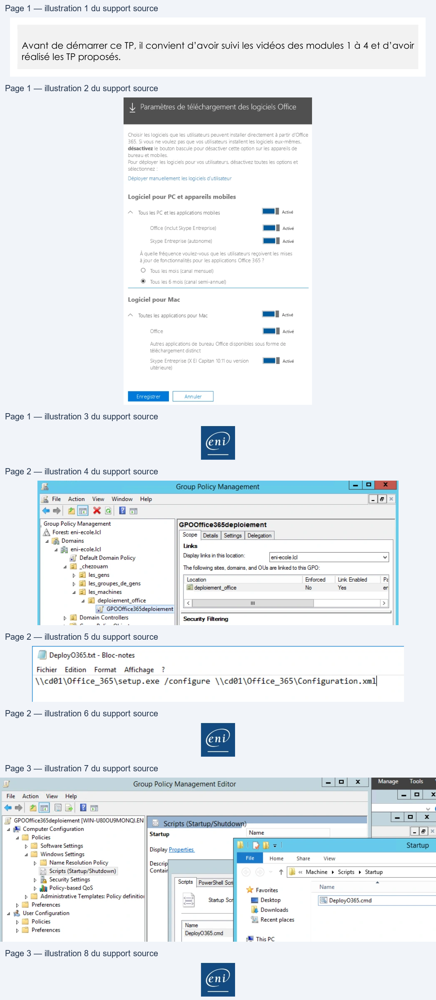

Transcription du document du Drive TSSR. La mise en forme est adaptée au Web ; les compléments IA du portail sont présentés séparément.
Cloud et Microsoft 365
TP 01 du Module 04 – Services complémentaires
Avant de démarrer ce TP, il convient d’avoir suivi les vidéos des modules 1 à 4 et d’avoir
réalisé les TP proposés.
Bloquer le téléchargement d’Office
•
Rendez-vous dans les paramètres de téléchargement des logiciels Office et désactivez
la possibilité pour les utilisateurs d’installer le pack Office.
Déploiement du pack Office manuellement
•
En allant sur le site https://www.microsoft.com/en-us/download/details.aspx?id=49117;
vous pouvez télécharger l’outil de déploiement pour le pack Office 365.
Page 1/3
© ENI – Tous droits réservés
JL Paramètres de téléchargement des logiciels Office
Choisir les logiciels que
les utilisateurs peuvent installer directement à partir d'Office
365.
Si
vous ne voulez pas que vos utilisateurs installent les logiciels eux-mêmes
désactivez
le bouton bascule pour
désactiver cette option sur les appareils de
bureau et mobiles
Pour déployer les logiciels pour vos utilisateurs, désactivez toutes les optionset
sélectionnez
Déployer manuellement les logiciels d'utilisateur
Logiciel pour PC et appareils mobiles
A.
Tous les PC et les applications mobiles
MD active
Office
(inclut Skype Entreprise
MD active
Skype Entreprise (autonome)
M active
À quelle fréquence voulez-vous que
les utilisateurs reçoivent
les mises
à jourde fonctionnalités pour les applications Office 365
?
©
Tous les mois (canal mensuel
©
Tous les
6 mois (canal semi-annuel
Logiciel pour Mac
A
Toutes les applications pour Mac
MD active
Office
ere
Autres applications de bureau Office disponibles sous forme de
téléchargement distinct
Skype Entreprise (X El Capitan 10.11 ou version
me active
ultérieure)
Cloud et Microsoft 365
•
Créez un partage sur votre serveur, de préférence dans une partition D:\ prévue à cet
effet.
•
Déposez le contenu du package téléchargé au préalable.
Vous pouvez au choix utiliser les fichiers XML présents par défaut, ou personnaliser le
déploiement à l’aide du site https://config.office.com/.
•
Lancez le téléchargement des sources grâce à la commande :
PS D:\ \office_365> .\setup.exe /download \\Serveur\partage créé\Configuration.xml
Vous pouvez maintenant installer le pack Office :
D:\ \office_365> .\setup.exe /configure \\Serveur\partage créé\Configuration.xml
•
Créez ensuite la GPO :
•
Créez un fichier Notepad, glissez la ligne de commande précédente et transformez
l’extension du fichier en .cmd.
•
Editez la GPO, allez dans Configuration ordinateur / Paramètres Windows / Scripts de
démarrage / Arrêt et ajoutez le script créé précédemment.
NB : le partage dans lequel est placé le script doit être lisible des utilisateurs impactés par la
GPO.
Page 2/3
© ENI – Tous droits réservés
EF
Ca Fe Ace View Window
A
Ce
+ 2] X QG]
, Group Policy Management
GPOOffice365deploiement
A Forest: eni-ecole.lcl
Scope
| Settings || Delegation |
4 Æ Domains
p=)
.
Links
4 5j eni-ecole.lcl
"
|
4 Bj _chezouam
The following sites, domains, and OUs are linked to this GPO:
> Al les_gens
cation
Enforced Link Enabled
Pa
p> il les_groupes_de_gens
—
4
4 (@) les_machines
[il deploiement_office
fies
bal
+ detent
=a |
>
ï/
GPOOffice365deploiement
> Æ1 Domain Controllers
Security Filtering
re
DeployO365.txt - Bloc-notes
Fichier
Edition
Format
Affichage
?
\\cd@1\0FFfice_365\setup.exe /configure \\cd@1\0ffice_365\Configuration. xml]
Cloud et Microsoft 365
PS C:\users\administrator\office_365> gpupdate /force
•
Redémarrez la machine et vérifiez que le pack Office est bien installé.
Page 3/3
© ENI – Tous droits réservés
8)
Group Policy Management Editor
{-{o| x |
Manage
Tools
File
Action
View
Help
[ol
x
@9| alm
S|
vt
.5} GPOOffice365deploiement [WIN-U800U9MONQI.EN
3]
EE =
4 © Computer Configuration
BOE
i
Yl
ws
b © SoftwareSettings
Display Properties
"i pr
|
4 © Windows Settings
OMR
Home
Share
View
b E Name Resolution Policy
Descrip
2
(| Scripts (Startup/Shutdown)
Contai
® | « Machine » Scripts » Startup
by Security Settings
Sert |PowerShelSa
:
D gl Policy-based QoS
À Favorites
RES
p> 1) Administrative Templates: Policy definitiol
=
Startup
So
BH Desktop
Deploy0365.cmd
b EM Preferences
=
4 8 User Configuration
UB Downloads
> I Policies
=
1 Recent places
p> OM Preferences
Denloy0365 cmd
of This PC
ew
